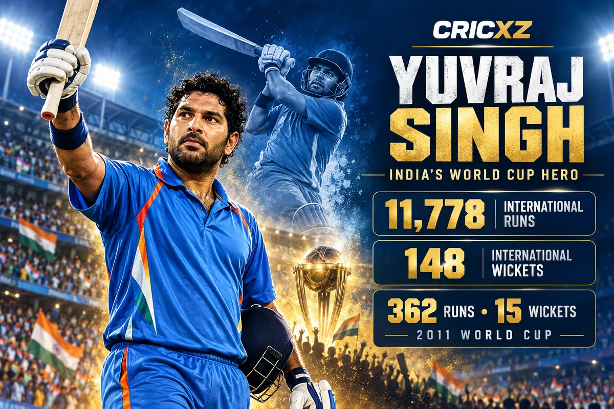
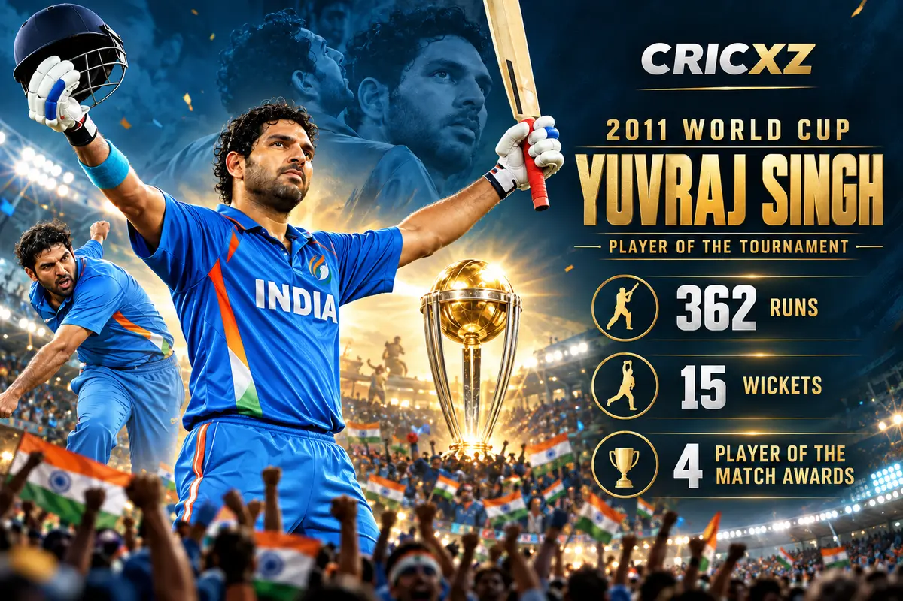

Test Career
- Matches
- 40
- Runs
- 1,900
- Average
- 33.92
- Highest score
- 169
- 100s / 50s
- 3 / 11
- Wickets
- 9

Yuvraj Singh scored 11,778 international runs and took 148 wickets. A fearless match-winner, he starred in India's 2007 T20 World Cup triumph and was Player of the Tournament when India won the 2011 World Cup.
Career statistics are final.
Yuvraj's last international appearance came in June 2017. Figures were checked against ICC and ESPNcricinfo career records.
Yuvraj played 402 international matches across Tests, ODIs and T20Is. His clean left-handed striking, athletic fielding and useful slow left-arm bowling made him one of India's most influential limited-overs players.
He accumulated 11,778 international runs, including 17 centuries, and took 148 wickets. His greatest value appeared when tournaments and pressure matches demanded an all-round contribution.

Yuvraj scored 362 runs at an average of 90.50 and took 15 wickets during India's title-winning 2011 World Cup campaign. His performances brought four Player of the Match awards and the tournament's top individual honour.
He made one century and four fifties, while his career-best ODI figures of 5/31 came against Ireland. India defeated Sri Lanka in the Mumbai final to lift the World Cup for the first time since 1983.
Against England at Durban during the inaugural 2007 T20 World Cup, Yuvraj hit Stuart Broad for six sixes in one over. He reached fifty from 12 balls, setting a record for the fastest half-century in men's international cricket at the time.
Days later, his 70 from 30 balls against Australia powered India into the final. India went on to beat Pakistan and win the inaugural men's T20 World Cup.
16 October 2003 – 9 December 2012
Debuted against New Zealand in Mohali and made his final Test appearance against England in Kolkata.
3 October 2000 – 30 June 2017
Debuted against Kenya in Nairobi and played his final ODI against West Indies in North Sound.
13 September 2007 – 1 February 2017
Debuted against Scotland in Durban and made his final T20I appearance against England in Bengaluru.
Scored 1,900 Test, 8,701 ODI and 1,177 T20I runs.
Produced 362 runs and 15 wickets in India's championship campaign.
Hit every ball of Stuart Broad's over for six at the 2007 T20 World Cup.
Recorded the fastest men's international fifty at the time.
Claimed nine Test, 111 ODI and 28 T20I wickets.
Won the 2007 T20 World Cup and 2011 ODI World Cup with India.
Announced himself internationally during India's title-winning campaign.
Received India's national sporting honour.
Received India's fourth-highest civilian award.
Returned to play for India after cancer treatment, adding resilience to his sporting legacy.